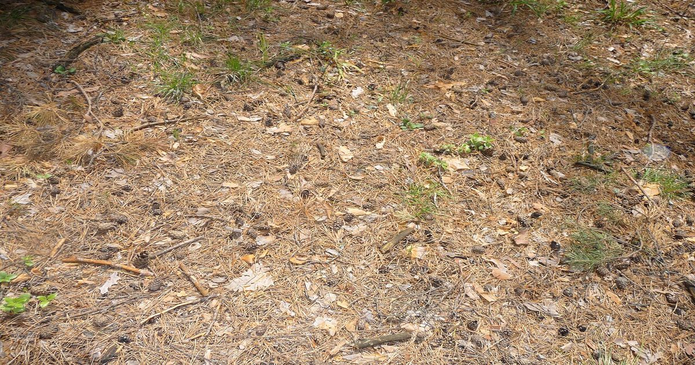

Что происходит с почвенными микроорганизмами в ноябре: взгляд эколога
С приходом ноябрьских холодов наземная природа входит в состояние покоя, однако под поверхностью почвы продолжается интенсивная биологическая работа. Эксперт РУДН Татьяна Ледащева объясняет, как микробиоты адаптируются к снижению температуры и почему от их активности зависит плодородие следующего сезона.
Физиологическая адаптация к похолоданию
Почвенные микроорганизмы не впадают в спячку в привычном понимании, а перестраивают свой обмен веществ в ответ на понижение температуры среды. Клеточные мембраны изменяют свой липидный состав, становясь более жидкими, что сохраняет проницаемость и функциональность транспортных белков даже вблизи нуля градусов.
Параллельно запускается синтез криопротекторов — веществ, предотвращающих образование ледяных кристаллов внутри клетки и стабилизирующих структуру белков. Благодаря этим механизмам значительная часть микробиоты сохраняет метаболическую активность и продолжает катализировать биохимические реакции, хотя и в замедленном темпе.

Работа с органическими остатками поздней осенью
Снижение температуры меняет соотношение скоростей процессов минерализации и иммобилизации питательных элементов. В холодную пору иммобилизация — усвоение минералов микробной биомассой — часто преобладает, что временно консервирует азот и фосфор в органической форме и предотвращает их вымывание талыми водами.
По мере накопления биомассы и последующего ее саморазложения (эндогенного дыхания) происходит минерализация запасов. Такой пульсирующий режим работает как буфер, сглаживающий пиковые нагрузки на экосистему и гарантируя наличие доступных форм питания для ранневесенних посевов и естественной регенерации растительности.

Структурные сдвиги в микробном сообществе
Функциональная избыточность микробиоты — наличие у таксономически разных видов схожих ферментативных систем — гарантирует устойчивость экосистемных функций при смене доминант. Даже если состав таксонов меняется, ключевые процессы циклирования углерода и азота продолжаются без критических сбоев.
Понимание этих закономерностей позволяет прогнозировать реакцию почв на климатические аномалии, такие как поздние оттепели или бесснежные зимы, и обосновывать агротехнические приемы сохранения плодородия на базе биологических ресурсов.
Практический смысл для поддержания плодородия
Введение органических удобрений или сидератов до устойчивых заморозок обеспечивает субстрат для «зимнего» дыхания микробиоты и формирует запас гуминов. Качество этого органического вещества — соотношение углерода к азоту, степень лигнификации — определяет скорость и направление превращений в холодный период.
Мониторинг биохимических показателей почвы, таких как базальное дыхание или активность ключевых ферментов, дает объективную картину биологического состояния агроценоза. Эти данные позволяют скорректировать системы земледелия до начала весенне-полевых работ, опираясь на реальный потенциал почвенной биоты.
Подготовка почвы к зиме с учетом микробиологии
Перед началом холодного периода полезно обсудить с агрономом или почвоведом текущее содержание органического вещества, уровень влажности и планируемые внесения компоста или мульчи. Специалист поможет оценить, достаточно ли микробной биомассы для продолжения минерализации залежей за зиму, и порекомендует, стоит ли вносить дополнительные углекислые субстраты или ограничивать механическое воздействие на почву.
Меры не подойдут участкам с сильной уплотненностью, загрязнением тяжелыми металлами или недавними химическими обработками, так как в таких условиях микробиальная активность уже подавлена. Итог зависит от сохраняемого разнообразия видов, от режима влаги и температуры в верхнем горизонте, а также от регулярности внесения органики в предыдущие сезоны.
Коротко: В ноябрьской почве микроорганизмы не спят, а адаптируются к холоду за счет изменения мембран и синтеза защитных веществ. Их работа по разложению органики и накоплению питательных элементов создает фундамент плодородия будущего урожая.
Обращали ли вы внимание на состояние почвы в позднюю осень и связывали ли его с урожайностью следующего года?